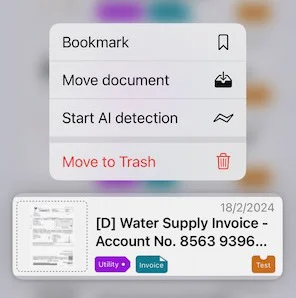
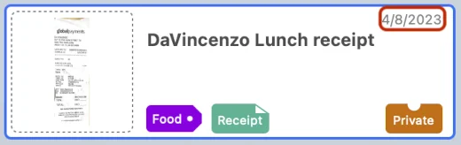
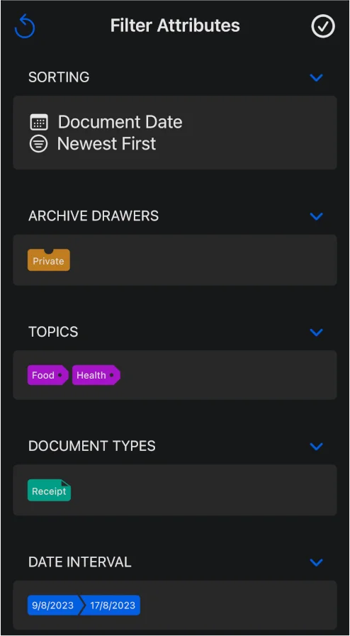
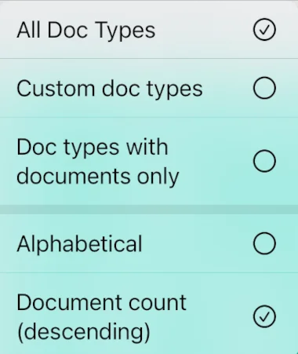
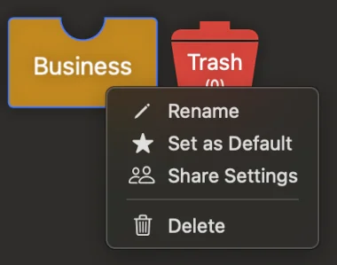

Documentation
How to add, edit, filter, label, share and configure documents in Archivist.
Adding Documents
Adding documents to Archivist can be done in four different ways:
1. Camera Scan (iOS / iPadOS only)
Tap the scan button located at the bottom right of the documents list view. Allow camera access when prompted. Ensure that you don't move the lens too close while scanning the first document page to avoid missing the page edges.
After capturing the page or multiple pages, tap on the thumbnail view of each page at the bottom left to adjust cropping, change color space, or rotate if needed.
Tap "Save" to create the new document.
2. File / Photo Import
Press the import button at the top right of the navigation bar.
On iOS / iPadOS, choose either "file import" or "photo import." On macOS, a Finder window will open, allowing you to select one or more files to import.
Archivist currently supports PDF, JPG, PNG, and TIFF file types. Image files are automatically converted to PDF pages.
When importing multiple files at once, image files are considered as pages of the same document, resulting in a single document. However, if you select multiple PDF files, a new document will be created for each file.
3. Drag and Drop (macOS and iPadOS only)
Simply drag and drop one or more files onto the document list area in the "Documents" tab.
On macOS, you can drop the file(s) anywhere in the list. On iPadOS, make sure to drop the file(s) onto the blue scan button, for example in split view with the Files app.
Archivist follows the same logic as described in 2) when deciding whether to create one or several documents if multiple files are dropped at the same time.
Additionally, you can drop a file onto the Archivist app icon in the macOS dock to trigger the creation of a new document.
4. Importing a file from another app (iOS / iPadOS only)
In many file handling apps, such as Apple's Files app, you can select Archivist in the system share sheet as share destination.
A small window with an activity indicator will appear. Tap "OK" once the import process is complete and the checkmark indicator is shown.
Editing Documents
To edit the document data, select the document in the document list of the "Archive" tab and press the pencil button on the bottom right on iOS / iPadOS or click on the column-reveal button on the right side of the document view on macOS.
If you are the owner of the document, you can edit all document properties except for the meta-data shown at the bottom of the form.
In case a document is shared with you and the owner has granted write access, only the following properties are editable:
- Title
- Document Date
- ID
- Text Content
- Comment
If you only have read-access, none of the properties are editable. Check out the section on sharing below for details.
The editing view allows you to change the document attributes such as "Archive Drawer", "Topics", "Correspondent" and "Document Type". A document can only be part of one drawer and have one document type and one correspondent, but it can have several topics assigned to it or no topic at all. The correspondent is optional.
After making changes to one or several document properties, you need to click or tap the "Save" button for the changes to be persisted. If you want to undo the changes, you can press the "Reset" button.
The document view also allows editing the PDF document itself. To rotate a page clockwise, click or tap the "rotate" button on the PDF page view.
You can also add, delete and rearrange the PDF pages in the thumbnail view. To open the page thumbnail view, tap or click on the thumbnail button (in the top left corner on macOS or on the bottom toolbar on iOS / iPadOS).
The "+Pages" button allows you to append the PDF file by selecting another PDF file or one or several images.
Additionally, on macOS, the thumbnail view includes an additional button as last thumbnail item - you can click it to add pages and drop files onto the button.
Each page thumbnail has a delete button in the top right corner. Press the button to remove the page. However, if the document only has one page, the delete button will not be shown.
To rearrange the order of the PDF pages, long-press or long-click on the page, then drag it to the desired position.
All changes can be undone by selecting the "Restore" button or saved by clicking or tapping the "Save" button.
Important: some PDF files, such as official documents, may not allow adding, deleting, or rotating pages. In such cases, the respective buttons will be greyed out and unavailable for use.
Adding a name card to your contacts
If the document type is "Name Card", Archivist can extract the contact details and add the person to your address book. Open the document and choose "Add To Contacts". If you enable "Use Apple Intelligence when available" on a supported device running iOS 26, iPadOS 26 or macOS 26, Apple Intelligence extracts the details on device. Otherwise, Archivist can use a remote AI provider, which uses one AI document token.
Review the name, organisation, phone numbers, email addresses and postal addresses, then save. On iOS and iPadOS the system contact editor opens. On macOS the contact form appears in Archivist.
Making changes in the Document List
Bring up the context menu by long pressing (iOS / iPadOS) or right-clicking (macOS) on a document cell in the document list of the "Archive" tab. The context menu includes the following options:
- Bookmark or Remove from Bookmarks
- Move document (to another drawer)
- Start AI detection
- Move to trash

Alternatively, you can swipe left or right on the document cell to reveal the "Add to bookmarks" and "Move to trash" buttons.
Please note that the option "Start AI detection" is only available if document properties haven't been set through AI before, e.g. because auto-AI detection (on document creation) is switched off in the settings. If you prefer AI detection to be switched off by default, the option "Start AI detection" allows you to trigger AI detection for some documents only.
The navigation bar on the top of the documents list view contains an edit button. Clicking or tapping this button will toggle the document list edit mode. In edit mode, you can select one or several documents by activating the check mark that appears on the left of each document cell.
Once selected, you can perform the following actions using the buttons in the navigation bar:
- move the selected documents to another drawer or
- move the selected documents to the trash bin.
To exit the edit mode, press the "Done" button in the navigation bar.
If a document is in the trash bin, the context menu for that document will be different:
Delete: permanently deletes the document, including the PDF file
Restore: moves the document back to its original drawer
Move document: allows moving the document to another drawer, thereby restoring it.
Sorting and Filtering Documents
Each document in Archivist has three dates associated with it:
Document date: If a date is found within the document itself, such as the date on an invoice, Archivist will set this as the document date. However, if no date is detected in the document text, the document date will be the same as the creation date.
Creation date: This is the date when the Archivist document is created and may differ from the document date.
Modification date: Whenever a document is modified, such as changing the title or adding a topic and saving the document, the modification date is updated to the current date.

The date displayed in the top right corner of each document cell in the document list of the "Archive" tab depends on the date type currently set for the document list. The date type also affects the position of the document cell in the list based on the current sorting order.
On macOS, you can access the sorting view directly by clicking on the sorting view control button on the navigation bar.
On iOS / iPadOS, the sorting controls are part of the filter control view.
To access the filter attributes view tap the control button on the top right.

In addition to the sorting controls mentioned earlier, the filter attributes view allows you to set the following filters:
- Archive drawers
- Topics
- Correspondents
- Document types
- Start and/or end date (both inclusive)
Since a document can only be part of one drawer and only have one document type, multiple selections are logically combined using an "OR" operator.
However, when selecting multiple topics, they are combined using an "AND" operator.
The start and end date always refer to the date type set in the sorting section.
As shown in the screenshot, the filter attributes view includes a reset button on the top left, which, when pressed, removes all filter attributes and resets the sorting parameters to their default values ("document date" and "newest first").
Changes in the filter attributes view must be confirmed by pressing the checkmark button in the top right corner; otherwise, the filter settings will not be applied to the document list.
Once at least one filter label is set, the document list will show the filter label bar in the list header (this bar is always visible on macOS so that filter labels can be set by dragging document attribute labels from the document attributes window onto the bar).
Alternatively, you can quickly filter the document list by typing a search keyword in the search bar. The list will be filtered based on the keywords, searching through all text fields of the documents.
By pressing the Bookmark button on the top bar of the document list, you can toggle the display of only bookmarked documents on and off.
Adding and Editing Document Attribute Labels
There are four types of attribute labels available in the application: Archive Drawers, Topics, Correspondents, and Document Types. Each type has its own dedicated tab section. On iOS / iPadOS these tabs are in the main app window, however on macOS, the attribute label lists can be found in a separate window that can be opened from the menu bar or by clicking on the drawer button in the top area of the main app window.

Correspondents are optional and describe the sender or recipient of a document, such as a bank, insurer, employer or utility company. A document can have one correspondent or none. When a correspondent is set, Archivist adds a correspondent folder between the topic and year folders in iCloud Drive.
To access the options related to attribute labels, simply tap or click on the options button. This will bring up a menu with various filter and layout options. For example, the screenshot provided illustrates the options available for the document types list. The document types, topics and correspondents lists offer two layout options: "Alphabetical" and "Document count." However, the layout option for the drawer list is limited to the descending document count layout.
When you first launch Archivist, the system automatically creates system drawers, topics, and document types. While there are numerous system topics and document types available, there are only two system drawers: "Private" and "Trash". System drawers cannot be deleted.
To add a custom attribute item, simply press the "Plus" button. Please ensure that the item name is unique and does not match any existing attribute items.
Both drawers and document types have a default item since every new document must belong to a drawer and have a document type. You can change the default item by selecting the "Set as Default" option in the context menu. On iOS/iPadOS, simply tap on the item icon to open the context menu, while on macOS, right-click to access it.

If the attribute item is a custom item, the context menu also provides options to delete and rename the item. However, please note that the deletion option will only appear if the item does not have any associated documents.
Deleted system topics and document types can be restored in settings - simply open the "Restore System Items" view in the first section.
Archive drawers have an additional option called "share settings". For more information on this feature, please refer to the "Sharing" section.
Settings
On iOS/iPadOS, the settings view has its dedicated tab on the tab bar. However, on macOS, the app settings are only accessible through a separate window. To open the settings window on macOS, click on the app name in the menu bar and then select the "Settings" menu option or, simply click on the "gear" icon in the top right corner of the main app window.
Document Properties
In the "Document Properties" segment, you can set the option to find the document type, topic(s) and correspondent in the filename. If these properties are found when creating a new document, AI document properties analysis will not be attempted.
For instance, if a filename contains the words "travel" and "insurance," those two topics will be set automatically. This feature is only applicable to imported files and images since scanned documents don't have meaningful filenames.
The second option in this section allows you to switch "AI Document Properties Detection" on or off. This means that if the document properties have not been found in the filename (if any), Archivist will ask an AI provider to analyse an excerpt of the document in order to find at least one topic, the document type, the correspondent and the title of the document. This option is switched off by default. Every new user of Archivist gets 10 AI document tokens for free. More tokens can be bought in the "In-App Purchases" section.
On supported devices running iOS 26, iPadOS 26 or macOS 26, the section also offers "Use Apple Intelligence when available". With this option, document properties and contact details are detected on device by Apple Intelligence, and no AI document token is used. Apple Intelligence availability depends on the device, language and region.
If you enable "Use remote AI provider as fallback for Apple Intelligence", Archivist uses the selected remote AI provider when Apple Intelligence does not respond as expected. This fallback uses an AI document token. You can choose the remote AI provider in the same section.
Customising iCloud Drive Folder Names
The settings window also allows you to customise iCloud Drive folder names for all drawers, topics and correspondents, including system items. All PDF documents are stored in the "Archivist" folder within your iCloud Drive directory, following the path structure:
Drawer > Topic > Correspondent (optional) > Document Date (Year)
The correspondent folder is only created when a correspondent is set. Documents without a correspondent are stored directly in the topic folder.
If you are using the macOS version of Archivist, this segment also contains options to "Auto-set topics as Finder File Tags" and "Auto-set document types as Finder File Tags". These options set Finder file tags every time a new document is created.
You can also manually trigger setting Finder file tags by clicking on the related buttons.
Please be aware that the tags are grey by default and colours can only be set in the Finder.
Restoring Deleted System Items
Furthermore, settings includes an option to restore deleted system drawers, topics and the "Archivist QSG" document in case you have deleted the quick start guide and would like to restore it.
To start the restoration process, simply click on the respective button. In case there is nothing to restore, the respective option will be disabled.
In-App Purchases
Without paying for Archivist's full version, you can create up to 10 documents. Consider buying the full version in the In-App Purchases section. It costs much less than a cup of coffee.
In the same segment, you can also buy AI document properties detection tokens, provided you have unlocked the full version. One token is used for each new document where remote AI detection is used, because the properties detection through the file name failed or is switched off. Apple Intelligence detection on supported devices does not use a token. Make sure to switch on the AI properties detection option if you want to use this feature (by default, it is switched off).
Other Settings
Lastly, the "Other settings" section provides options to clear the local file cache. If this option is selected, any PDF file of a document you subsequently open will need to be reloaded from iCloud Drive.
Additionally, if you handle documents containing Chinese characters, make sure to activate the corresponding option. Otherwise, Chinese characters may not be recognised and won't appear correctly in the "Content" section of the document editing view. By default, this option is disabled if none of your system languages include Chinese. Please note that if this option is enabled, only English can be recognised along with Chinese. That means any special characters, e.g. the German Umlaut, will not be recognised properly if the option to recognise Chinese characters is enabled.
Still stuck?
Email archivist-support@timepod.dev and include your device model and app version.